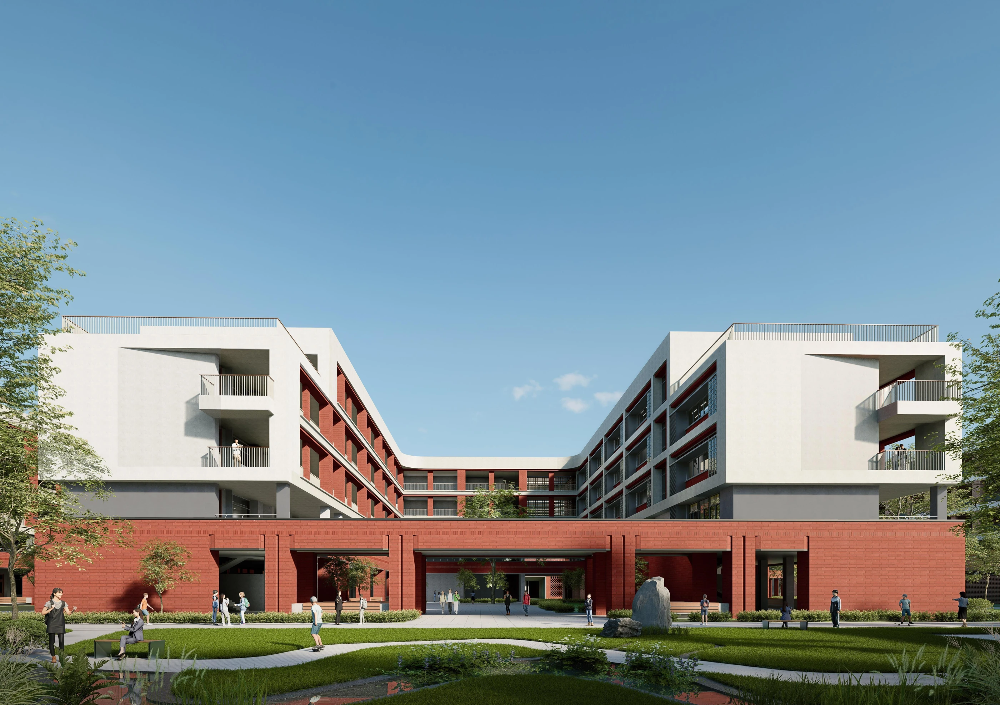

HEFEI NO.9 HIGH SCHOOL
合肥市第九中学高新校区
以院落与连廊，串起校园的一天
安徽 · 合肥
教育建筑 · 校园 / 2025.11

- 地点
- 安徽 · 合肥
- 年份
- 2025.11
- 类型
- 教育建筑 · 校园
- 阶段
- 报规方案
- 参与
- 建筑单体、平面深化与文本 · 团队协作
- 设计团队
- 深圳市建筑设计研究总院有限公司合肥分院
PROJECT / 项目
教学、生活、运动与公共活动共同构成校园。方案通过组团和连续步行联系，把不同功能组织为可辨识的空间序列，在有序的布局中容纳交流、停留与日常活动。
01 / DESIGN清晰的功能组团
将教学、综合、生活与运动空间进行组织，让校园的主要区域与到达关系便于识别。
02 / DESIGN连续的步行联系
利用风雨连廊与校园公共空间连接日常活动，以完整的步行体验串联各个单体。
03 / DESIGN共享空间成为节点
食堂、图书综合楼及学生活动空间共同构成校园公共生活的支点。